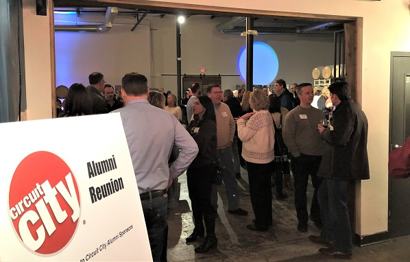

Adrian Guizar
Hello, I've honestly actually never worked a day in my life, nor have I done any voluntary work, so I don't really have much to write about in terms of my experience of working that I'd typically include in my resume. I'm not sure if I should just make up a bio of someone seeemingly to have worked in order to use up the mandated 500 words, or if I should instead discuss possible jobs I would have been interested in. For the sake of appealing to both, I will write fictional experience necessary to fill in a resume, but it should be noted that everything written will be entirely fictional, and not at all my education, or work experience, given that I have never worked, but would have liked to have worked in some of these locations for nostalgia's sake..
None of the follow information is true, and should not be taken as fact. I will not be held responsible for the decisions of whichever company decides to hire me based off of the false bio I give in these descriptions.
To begin with, I would like to thank my father, mother, pastor, and Electrician mentor. I was educated at A UK private school called Radley College, which costs around $12k to attend. It was very cool. I graduated Oxford University with summa cum laude in administrative studies on March seventeenth, two thousand six common era. I have since been hopping between various jobs as a cook in Little Caesars and Elephant Bar, Uber Driver in Holland, retro gaming youtuber, retail worker at Circuit City, Fry's Electronics, and Radioshack, and I am currently an electrician's apprentice. Out of all these jobs, my favorite profession is undoubtedly a Rwtro Gaming Youtuber. It was very fun harnessing my skills in retro games such as the Lion King, Aladin, and E.T. Unfortunately, my skills did not garner me many views on youtube to gain any ad revenue, and I instead made minus four thousand dollars purchasing equipment for this profession, rather than gained any profit, so I would not recommend I be hired to manage finances, ha ha.The reason I have yet to have worked in anything within what I majored in is because I felt I was unready to dedicate myself to any of the professions availalbe to me with my major. However, after gaining plenty of experience in my previous positions as well as an electricians assistant, I feel undoubtedly prepared to begin working in my field, and earn a reliable income that will be afforded to me. With that said, On May first, Twenty twelve plus nine year common era, I had entered the lottery on a whim, and happened to come into the fortune of 4.2 million dollars, so, although if employers have no interest in hiring me at this time, I believe I will be able to support my humble lifestyle with my remaining twenty four thousand dollars. I only have a few words left to reach the 500 mark, so I will simply say I don't know what happened to the rest of the funds. It's true what they say, what happens in Vegas, stays in Vegas, ha ha.
Experience
Electrician
• Learning to wire electricity for houses
• Watching a level 5 Mentor work on wiring electricity for houses
• Approximate knowledge in installing heated floors
Retail Worker
• Sold electronics to public
• Sold video games
• Helped install Anti-virus software for customers
• stocker
Education
University of Riverside
Portfolio
